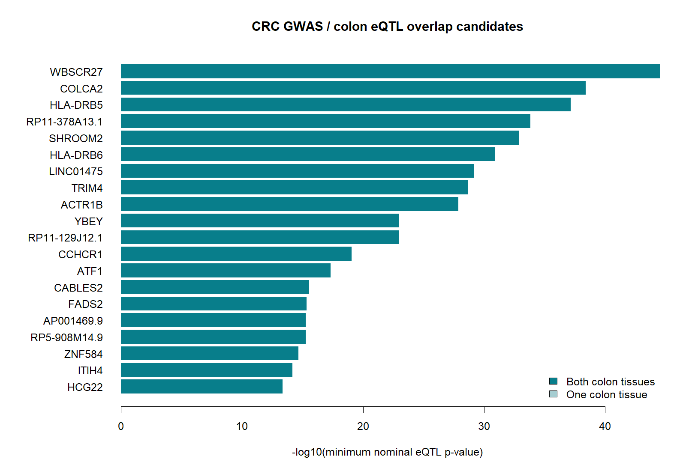

연구 GCST90129505 · gtex_v8 · Colon Transverse / Sigmoid · 생성: 2026-09-22
| metric | value |
|---|---|
| significant_catalog_rsids | 174 |
| mapped_rsids | 169 |
| unmapped_rsids | 5 |
| variant_gene_tissue_links | 153 |
| candidate_genes | 102 |
| genes_in_both_tissues | 45 |
GWAS p ≤ 5×10⁻⁸인 단일 rsID를 GTEx GRCh38 변이로 매핑했습니다. LD 대리 변이는 추가하지 않았습니다. 다중 대립유전자 rsID는 복수 매핑이 가능하므로 variant_gene_evidence.tsv의 ref/alt를 후속 확인해야 합니다. eQTL이 조회되지 않았다는 사실은 발현 조절 효과가 없다는 증거가 아닙니다.
두 조직에서 관찰된 유전자, 최소 eQTL p값, 최소 GWAS p값 순으로 정렬했습니다. 이 순서는 검토 편의를 위한 것이며 독립적인 재현이나 인과확률 순위가 아닙니다. 두 조직의 기증자는 겹칠 수 있습니다. 아래에는 상위 30개를 표시합니다.
| gene_id | gene_symbol | n_tissues | n_lead_variants | tissues | min_gwas_p | min_eqtl_p | best_eqtl_variant | evidence |
|---|---|---|---|---|---|---|---|---|
| ENSG00000165171.10 | WBSCR27 | 2 | 1 | Colon_Sigmoid;Colon_Transverse | 3e-08 | 2.79477e-45 | rs12539962 | overlap_only |
| ENSG00000214290.8 | COLCA2 | 2 | 1 | Colon_Sigmoid;Colon_Transverse | 1e-57 | 3.86426e-39 | rs3087967 | overlap_only |
| ENSG00000198502.5 | HLA-DRB5 | 2 | 1 | Colon_Sigmoid;Colon_Transverse | 9e-20 | 6.88378e-38 | rs9271363 | overlap_only |
| ENSG00000261338.2 | RP11-378A13.1 | 2 | 1 | Colon_Sigmoid;Colon_Transverse | 8e-17 | 1.49541e-34 | rs3731861 | overlap_only |
| ENSG00000146950.12 | SHROOM2 | 2 | 1 | Colon_Sigmoid;Colon_Transverse | 8e-12 | 1.34629e-33 | rs2732875 | overlap_only |
| ENSG00000229391.7 | HLA-DRB6 | 2 | 1 | Colon_Sigmoid;Colon_Transverse | 9e-20 | 1.23524e-31 | rs9271363 | overlap_only |
| ENSG00000257582.5 | LINC01475 | 2 | 1 | Colon_Sigmoid;Colon_Transverse | 1e-08 | 6.15800e-30 | rs6584283 | overlap_only |
| ENSG00000146833.15 | TRIM4 | 2 | 1 | Colon_Sigmoid;Colon_Transverse | 3e-10 | 2.08996e-29 | rs2527927 | overlap_only |
| ENSG00000115073.7 | ACTR1B | 2 | 1 | Colon_Sigmoid;Colon_Transverse | 7e-12 | 1.27226e-28 | rs11692435 | overlap_only |
| ENSG00000182362.13 | YBEY | 2 | 1 | Colon_Sigmoid;Colon_Transverse | 5e-13 | 1.09802e-23 | rs9983528 | overlap_only |
| ENSG00000228778.2 | RP11-129J12.1 | 2 | 1 | Colon_Sigmoid;Colon_Transverse | 1e-08 | 1.13390e-23 | rs6584283 | overlap_only |
| ENSG00000204536.13 | CCHCR1 | 2 | 2 | Colon_Sigmoid;Colon_Transverse | 2e-11 | 8.77745e-20 | rs2517448 | overlap_only |
| ENSG00000123268.8 | ATF1 | 2 | 1 | Colon_Sigmoid;Colon_Transverse | 2e-31 | 4.90513e-18 | rs11169572 | overlap_only |
| ENSG00000149679.11 | CABLES2 | 2 | 1 | Colon_Sigmoid;Colon_Transverse | 8e-55 | 2.75673e-16 | rs1741640 | overlap_only |
| ENSG00000134824.13 | FADS2 | 2 | 1 | Colon_Sigmoid;Colon_Transverse | 2e-21 | 4.58202e-16 | rs174537 | overlap_only |
| ENSG00000239415.1 | AP001469.9 | 2 | 1 | Colon_Sigmoid;Colon_Transverse | 5e-13 | 5.29879e-16 | rs9983528 | overlap_only |
| ENSG00000273619.1 | RP5-908M14.9 | 2 | 1 | Colon_Sigmoid;Colon_Transverse | 8e-55 | 5.51575e-16 | rs1741640 | overlap_only |
| ENSG00000171574.17 | ZNF584 | 2 | 1 | Colon_Sigmoid;Colon_Transverse | 3e-11 | 2.15169e-15 | rs11670192 | overlap_only |
| ENSG00000055955.15 | ITIH4 | 2 | 2 | Colon_Sigmoid;Colon_Transverse | 2e-13 | 6.52952e-15 | rs2001732 | overlap_only |
| ENSG00000228789.6 | HCG22 | 2 | 1 | Colon_Sigmoid;Colon_Transverse | 2e-11 | 4.53403e-14 | rs2517448 | overlap_only |
| ENSG00000188611.14 | ASAH2 | 2 | 1 | Colon_Sigmoid;Colon_Transverse | 5e-12 | 1.66341e-13 | rs10821905 | overlap_only |
| ENSG00000204528.3 | PSORS1C3 | 2 | 1 | Colon_Sigmoid;Colon_Transverse | 2e-11 | 8.96481e-12 | rs2517448 | overlap_only |
| ENSG00000131849.11 | ZNF132 | 2 | 1 | Colon_Sigmoid;Colon_Transverse | 3e-11 | 4.07243e-11 | rs11670192 | overlap_only |
| ENSG00000146535.13 | GNA12 | 2 | 1 | Colon_Sigmoid;Colon_Transverse | 5e-09 | 1.84871e-10 | rs1182197 | overlap_only |
| ENSG00000216901.1 | ZNF603P | 2 | 1 | Colon_Sigmoid;Colon_Transverse | 4e-08 | 1.86755e-10 | rs209142 | overlap_only |
| ENSG00000223534.1 | HLA-DQB1-AS1 | 2 | 1 | Colon_Sigmoid;Colon_Transverse | 9e-20 | 2.14861e-10 | rs9271363 | overlap_only |
| ENSG00000179344.16 | HLA-DQB1 | 2 | 1 | Colon_Sigmoid;Colon_Transverse | 9e-20 | 1.91629e-09 | rs9271363 | overlap_only |
| ENSG00000235106.9 | LINC00094 | 2 | 1 | Colon_Sigmoid;Colon_Transverse | 6e-09 | 2.41975e-09 | rs11789898 | overlap_only |
| ENSG00000163933.9 | RFT1 | 2 | 1 | Colon_Sigmoid;Colon_Transverse | 5e-13 | 3.55730e-09 | rs2581817 | overlap_only |
| ENSG00000137310.11 | TCF19 | 2 | 1 | Colon_Sigmoid;Colon_Transverse | 2e-11 | 4.64887e-09 | rs2517448 | overlap_only |

같은 genome build의 구간 전체 GWAS 및 유전자별 eQTL beta/SE 자료를 준비해 공위치 분석을 수행합니다. 유의한 SNP만으로 PP.H4를 계산하지 않습니다. 다중 인과변이, 조상집단 간 LD 차이, 건강한 대장 조직과 종양의 차이를 고려해야 합니다. NES는 GTEx 대체 대립유전자 기준이며 이 보고서에서는 대장암 위험 방향과 결합하지 않았습니다.